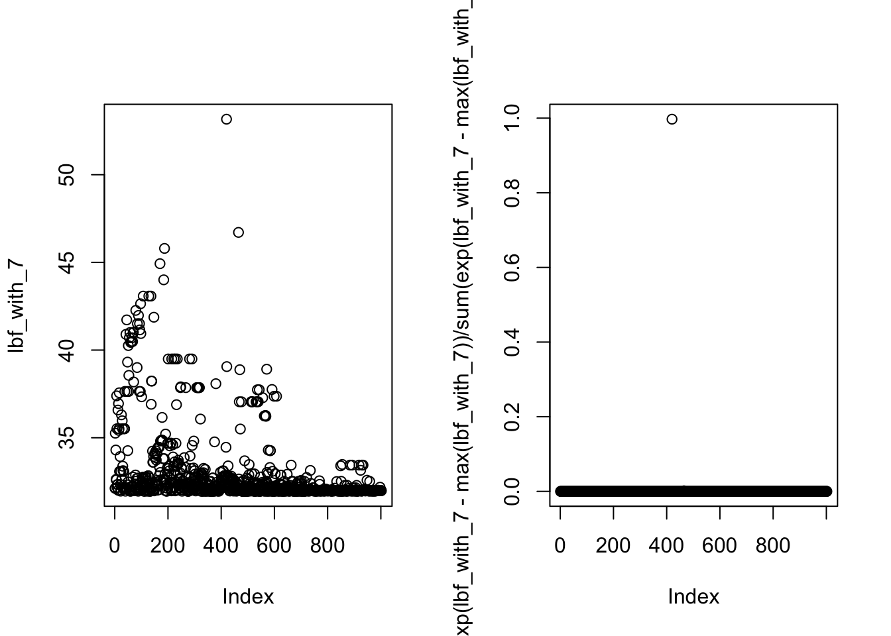
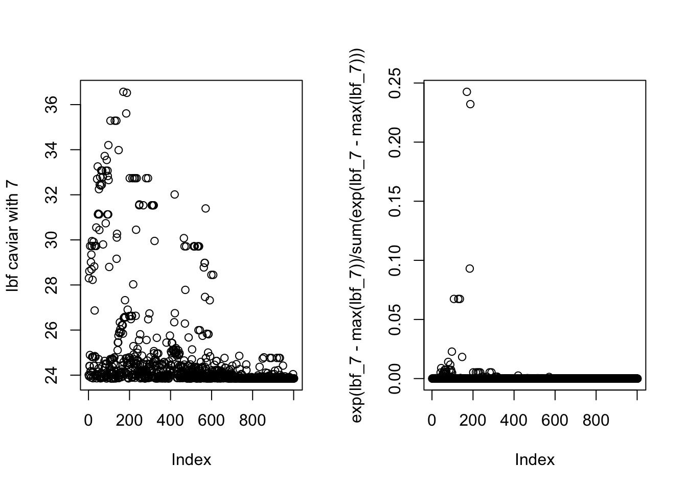
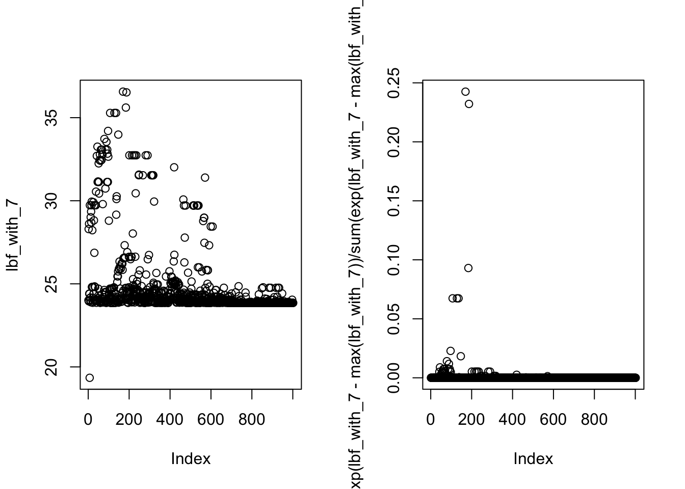
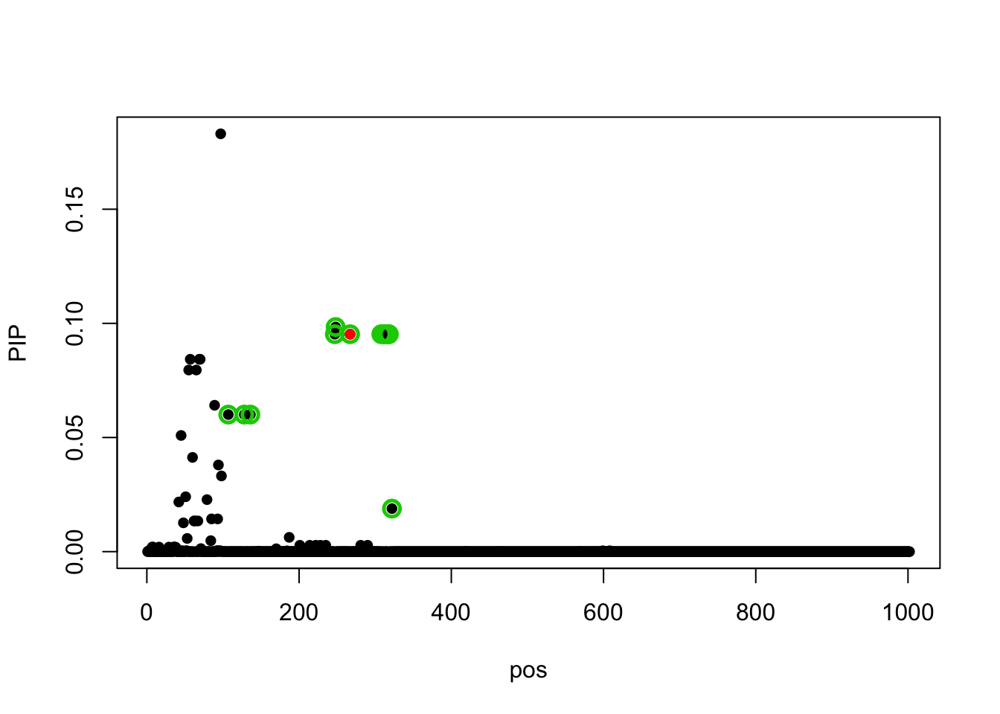

Last updated: 2019-06-03
Checks: 6 0
Knit directory: dsc-susie-z/
This reproducible R Markdown analysis was created with workflowr (version 1.3.0). The Checks tab describes the reproducibility checks that were applied when the results were created. The Past versions tab lists the development history.
Great! Since the R Markdown file has been committed to the Git repository, you know the exact version of the code that produced these results.
Great job! The global environment was empty. Objects defined in the global environment can affect the analysis in your R Markdown file in unknown ways. For reproduciblity it’s best to always run the code in an empty environment.
The command set.seed(20190115) was run prior to running the code in the R Markdown file. Setting a seed ensures that any results that rely on randomness, e.g. subsampling or permutations, are reproducible.
Great job! Recording the operating system, R version, and package versions is critical for reproducibility.
Nice! There were no cached chunks for this analysis, so you can be confident that you successfully produced the results during this run.
Great! You are using Git for version control. Tracking code development and connecting the code version to the results is critical for reproducibility. The version displayed above was the version of the Git repository at the time these results were generated.
Note that you need to be careful to ensure that all relevant files for the analysis have been committed to Git prior to generating the results (you can use wflow_publish or wflow_git_commit). workflowr only checks the R Markdown file, but you know if there are other scripts or data files that it depends on. Below is the status of the Git repository when the results were generated:
Ignored files:
Ignored: .DS_Store
Ignored: .Rhistory
Ignored: .Rproj.user/
Ignored: .sos/
Ignored: analysis/.DS_Store
Ignored: data/.DS_Store
Ignored: output/.DS_Store
Ignored: output/SuSiEFD/.DS_Store
Untracked files:
Untracked: data/random_data_31.rds
Untracked: data/random_data_31_sim_gaussian_35.rds
Untracked: data/random_data_31_sim_gaussian_35_get_sumstats_1.rds
Untracked: data/small_data_1.ld_in_file.in.ld
Untracked: data/small_data_1.ld_out_file.out.ld
Untracked: data/small_data_132.ld_in_file.in.ld
Untracked: data/small_data_132.ld_out_file.out.ld
Untracked: data/small_data_132_sim_gaussian_12.rds
Untracked: data/small_data_132_sim_gaussian_12_get_sumstats_1.rds
Untracked: data/small_data_1_sim_gaussian_2.rds
Untracked: data/small_data_1_sim_gaussian_2_get_sumstats_1.rds
Untracked: data/small_data_46.rds
Untracked: data/small_data_46_sim_gaussian_10.rds
Untracked: data/small_data_46_sim_gaussian_10_get_sumstats_2.rds
Untracked: data/small_data_69.ld_in_file.in.ld
Untracked: data/small_data_69.ld_out_file.out.ld
Untracked: data/small_data_69.rds
Untracked: data/small_data_69_sim_gaussian_3.rds
Untracked: data/small_data_69_sim_gaussian_3_get_sumstats_1.rds
Untracked: data/small_data_69_sim_gaussian_3_get_sumstats_1_susie_z_1.rds
Untracked: data/small_data_69_sim_gaussian_3_get_sumstats_1_susie_z_2.rds
Untracked: figure/
Untracked: output/SuSiEFD/r.in.pdf
Untracked: output/SuSiEFD/r.out.addz.pdf
Untracked: output/SuSiEFD/r.out.pdf
Untracked: output/SuSiEFD/small_data_148.ld_in_file.in.ld
Untracked: output/SuSiEFD/small_data_148.ld_out_file.out.ld
Untracked: output/SuSiEFD/small_data_148.rds
Untracked: output/SuSiEFD/small_data_148_sim_gaussian_1.rds
Untracked: output/SuSiEFD/small_data_148_sim_gaussian_1_get_sumstats_1.rds
Untracked: output/SuSiEFD/small_data_148_sim_gaussian_1_get_sumstats_1_caviar_4.cache.CAVIAR_condition_1.z
Untracked: output/SuSiEFD/small_data_148_sim_gaussian_1_get_sumstats_1_caviar_4.ld_out_z_file.out.z.ld
Untracked: output/SuSiEFD/small_data_68_sim_gaussian_2_get_sumstats_1_caviar_4.cache.CAVIAR_condition_1.z
Untracked: output/SuSiEFD/small_data_68_sim_gaussian_2_get_sumstats_1_caviar_4.ld_out_z_file.out.z.ld
Untracked: output/SuSiEFD/susierss.in.2.gif
Untracked: output/SuSiEFD/susierss.in.2.pdf
Untracked: output/SuSiEFD/susierss.out.2.gif
Untracked: output/SuSiEFD/susierss.out.2.pdf
Untracked: output/SuSiEFD/susierss.out.addz.1.gif
Untracked: output/SuSiEFD/susierss.out.addz.1.pdf
Untracked: output/SuSiEFD/susierss.out.addz.2.pdf
Untracked: output/SuSiEFD/susierss.out.addz.2.w.gif
Untracked: output/SuSiEFD/susierss.out.addz.2.w.pdf
Untracked: output/SuSiEFD/susierss.out.addz.5.pdf.gif
Untracked: output/SuSiEFD/susierss.out.addz.5.pdf.pdf
Untracked: output/dscoutProblem475.rds
Untracked: output/dscoutProblem75.rds
Untracked: output/finemap_compare_random_data_null_dscout.rds
Untracked: output/finemap_compare_random_data_signal_dscout.rds
Untracked: output/finemap_compare_small_data_signal_dscout.rds
Untracked: output/finemap_compare_small_data_signal_dscout_RE8.rds
Untracked: output/r_compare_FINEMAP_PIP_ROC.rds
Untracked: output/r_compare_add_z_FINEMAP_PIP_ROC.rds
Untracked: output/r_compare_add_z_FINEMAP_ROC.rds
Untracked: output/r_compare_add_z_SuSiEb_ROC.rds
Untracked: output/r_compare_add_z_SuSiErss_ROC.rds
Untracked: output/r_compare_add_z_dscout_susie_finemap_tibble.rds
Untracked: output/r_compare_add_z_lambda_FINEMAP_ROC.rds
Untracked: output/r_compare_add_z_lambda_SuSiEb_ROC.rds
Untracked: output/r_compare_add_z_lambda_SuSiErss_ROC.rds
Untracked: output/r_compare_add_z_lambda_caviar_CAVIAR_ROC.rds
Untracked: output/r_compare_add_z_lambda_caviar_FINEMAP_ROC.rds
Untracked: output/r_compare_add_z_lambda_caviar_SuSiEb_L1_ROC.rds
Untracked: output/r_compare_add_z_lambda_caviar_SuSiEb_L2_ROC.rds
Untracked: output/r_compare_add_z_lambda_caviar_SuSiEb_L5_ROC.rds
Untracked: output/r_compare_add_z_lambda_caviar_SuSiErss_L1_ROC.rds
Untracked: output/r_compare_add_z_lambda_caviar_SuSiErss_L2_ROC.rds
Untracked: output/r_compare_add_z_lambda_caviar_SuSiErss_L5_ROC.rds
Untracked: output/r_compare_add_z_lambda_caviar_dscout_caviar_tibble.rds
Untracked: output/r_compare_add_z_lambda_caviar_dscout_finemap_tibble.rds
Untracked: output/r_compare_add_z_lambda_caviar_dscout_susiebhat_tibble.rds
Untracked: output/r_compare_add_z_lambda_caviar_dscout_susierss_tibble.rds
Untracked: output/r_compare_add_z_lambda_dscout_susie_finemap_tibble.rds
Untracked: output/r_compare_dscout_susie_finemappip_tibble.rds
Untracked: output/r_compare_dscout_susie_finemappip_truth_tibble.rds
Untracked: output/r_compare_finemap_v1.3.1_ROC.rds
Untracked: output/r_compare_finemapv1.3.1.rds
Untracked: output/r_compare_susieb_PIP_ROC.rds
Untracked: output/r_compare_susiepip_tibble.rds
Untracked: output/r_compare_susierss_PIP_ROC.rds
Untracked: output/random_data_100_sim_gaussian_null_1_get_sumstats_1_finemap_1.rds
Untracked: output/random_data_31_35_fit_em.rds
Untracked: output/random_data_76.rds
Untracked: output/random_data_76_sim_gaussian_8.rds
Untracked: output/random_data_76_sim_gaussian_8_get_sumstats_1.rds
Untracked: output/small_data_42_sim_gaussian_36_get_sumstats_2_susie_z_2.rds
Untracked: output/small_data_92_sim_gaussian_30_get_sumstats_2_susie_z_2.rds
Untracked: small_data_48_MAF_filter.log
Untracked: small_data_48_MAF_filter_ll.log
Untracked: small_data_48_MAF_filter_post
Untracked: small_data_48_MAF_filter_set
Untracked: small_data_68_MAF_filter.z
Untracked: small_data_68_MAF_filter_out_addz.ld
Untracked: test.log
Untracked: test148.log
Untracked: test148_ll.log
Untracked: test148_post
Untracked: test148_set
Untracked: test2.log
Untracked: test2_ll.log
Untracked: test2_post
Untracked: test2_set
Untracked: test3.log
Untracked: test3_ll.log
Untracked: test3_post
Untracked: test3_set
Untracked: test_ll.log
Untracked: test_post
Untracked: test_set
Unstaged changes:
Modified: analysis/SuSiErssNotConverge.Rmd
Modified: analysis/SusieZPerformance.Rmd
Modified: analysis/SusieZPerformanceRE3.Rmd
Modified: output/dsc_susie_z_v_output.rds
Note that any generated files, e.g. HTML, png, CSS, etc., are not included in this status report because it is ok for generated content to have uncommitted changes.
These are the previous versions of the R Markdown and HTML files. If you’ve configured a remote Git repository (see ?wflow_git_remote), click on the hyperlinks in the table below to view them.
| File | Version | Author | Date | Message |
|---|---|---|---|---|
| Rmd | eea3de7 | zouyuxin | 2019-06-03 | wflow_publish(c(“analysis/index.Rmd”, “analysis/bf_test_caviar.Rmd”)) |
This is computation of log-BFs based on code from Caviar (see end for code)
library(mvtnorm)Warning: package 'mvtnorm' was built under R version 3.5.2library(data.table)Warning: package 'data.table' was built under R version 3.5.2lbf = function(Zcc,Rcc,NCP){
p = length(Zcc)
if(p==1){
return(dnorm(Zcc,0,Rcc+Rcc*NCP*Rcc,log=TRUE) - dnorm(Zcc,0,Rcc,log=TRUE))
} else {
return(mvtnorm::dmvnorm(Zcc, mean=rep(0,p), Rcc + Rcc %*% diag(NCP,p) %*% Rcc, log=TRUE) - mvtnorm::dmvnorm(Zcc, mean = rep(0, p), Rcc, log=TRUE))
}
}data = readRDS('output/SuSiEFD/small_data_68.rds')
r.in = as.matrix(fread('output/SuSiEFD/small_data_68.ld_in_file.in.ld'))
r.out = as.matrix(fread('output/SuSiEFD/small_data_68.ld_out_file.out.ld'))
sim = readRDS('output/SuSiEFD/small_data_68_sim_gaussian_2.rds')
ss = readRDS('output/SuSiEFD/small_data_68_sim_gaussian_2_get_sumstats_1.rds')
z = ss$sumstats$bhat/ss$sumstats$shat
r.out.addz = cov2cor((data$N_out-1) * r.out+tcrossprod(z))The true causal is 267. Susie gets 420 as a false discovery, and another CS containing SNPs correlated with 267.
z[c(7,8 ,16 ,29, 35, 36, 37,267,420)][1] 8.973421 8.973421 8.973421 8.973421 8.973421 8.973421 8.973421
[8] 8.973421 -0.339611The following shows that, using out of sample LD, indeed the BF for 7 and 420 is much higher than 7 alone (or 267 alone). [from caviar code NCP in caviar is set to be 5.2]
lbf_index = function(index,NCP){lbf(z[index],r.out.addz[index,index],NCP)}
lbf_index(7,5.2)[1] 37.38922lbf_index(c(7,267),5.2)[1] 37.85836lbf_index(c(7,420),5.2)[1] 53.16633lbf_index(c(267,420),5.2)[1] 44.04285And if we just look at the BFs in combination with SNP 7 the posterior on 420 is very near 1.
lbf_with_7 = rep(0,length(z))
for(i in 1:length(z)){
lbf_with_7[i] = lbf_index(c(7,i),5.2)
}
lbf_with_7[7]=lbf_index(7,5.2)
par(mfrow=c(1,2))
plot(lbf_with_7)
plot(exp(lbf_with_7-max(lbf_with_7))/sum(exp(lbf_with_7-max(lbf_with_7))))
log-BF from Caviar:
lbf.cavair = read.table('test2_ll.log', skip = 10, sep=' ')The lbf for SNP 7 is
lbf.cavair[7, 2][1] 24.8921The lbf for SNP 7, 267 is
lbf.cavair[lbf.cavair[,1]=='6,266,',2][1] 31.5348The lbf for SNP 7, 420 is
lbf.cavair[lbf.cavair[,1]=='6,419,',2][1] 32.0146The lbf for SNP 267, 420 is
lbf.cavair[lbf.cavair[,1]=='266,419,',2][1] 28.956idx = c(1008, 2008, 3007, 4005, 5002, 5998, 7, 6994:7988)
lbf_7 = lbf.cavair[idx, 2]
par(mfrow=c(1,2))
plot(lbf_7, ylab='lbf caviar with 7')
plot(exp(lbf_7-max(lbf_7))/sum(exp(lbf_7-max(lbf_7))))
The correlation matrix in CAVIAR has diagonal 1.36.
r.tmp = r.out.addz
diag(r.tmp) = 1.36
lbf_index = function(index,NCP){lbf(z[index],r.tmp[index,index],NCP)}
lbf_index(7,5.2)[1] 19.34501lbf_index(c(7,267),5.2)[1] 31.53482lbf_index(c(7,420),5.2)[1] 32.01464lbf_index(c(267,420),5.2)[1] 28.95603lbf_with_7 = rep(0,length(z))
for(i in 1:length(z)){
lbf_with_7[i] = lbf_index(c(7,i),5.2)
}
lbf_with_7[7]=lbf_index(7,5.2)
par(mfrow=c(1,2))
plot(lbf_with_7)
plot(exp(lbf_with_7-max(lbf_with_7))/sum(exp(lbf_with_7-max(lbf_with_7))))
Fit susie with lambda = 0.36
library(susieR)
fit_susie = susie_rss(z, r.out.addz, estimate_residual_variance = FALSE, L=2, lambda=0.36, track_fit = TRUE)Warning in susie_rss(z, r.out.addz, estimate_residual_variance = FALSE, :
This method is under active development, so it should not be considered
stable.Warning in susie_rss(z, r.out.addz, estimate_residual_variance = FALSE, :
The maximum number of non-zero effects is greater than 1, this feature is
experimental.susie_plot(fit_susie, y='PIP', b = sim$meta$true_coef)
Using lambda = 0.36, det(\(R+\lambda I\)) > 0.
This code is from CAVIAR for reference:
// cc=causal SNPs
// Rcc = LD of causal SNPs
// Zcc = Z-score of causal SNPs
// dmvnorm(Zcc, mean=rep(0,nrow(Rcc)), Rcc + Rcc %*% Rcc) / dmvnorm(Zcc, rep(0, nrow(Rcc)), Rcc))
//
double PostCal::fastLikelihood(int * configure, double * stat, double NCP) {
int causalCount = 0;
vector <int> causalIndex;
for(int i = 0; i < snpCount; i++) {
causalCount += configure[i];
if(configure[i] == 1)
causalIndex.push_back(i);
}
if (causalCount == 0) {
int maxVal = 0;
for(int i = 0; i < snpCount; i++) {
if (maxVal < abs(stat[i]))
maxVal = stat[i];
}
}
mat Rcc(causalCount, causalCount, fill::zeros);
mat Zcc(causalCount, 1, fill::zeros);
mat mean(causalCount, 1, fill::zeros);
mat diagC(causalCount, causalCount, fill::zeros);
for (int i = 0; i < causalCount; i++){
for(int j = 0; j < causalCount; j++) {
Rcc(i,j) = sigmaMatrix(causalIndex[i], causalIndex[j]);
}
Zcc(i,0) = stat[causalIndex[i]];
diagC(i,i) = NCP;
}
return fracdmvnorm(Zcc, mean, Rcc, diagC, NCP);
}
// We compute dmvnorm(Zcc, mean=rep(0,nrow(Rcc)), Rcc + Rcc %*% Rcc) / dmvnorm(Zcc, rep(0, nrow(Rcc)), Rcc))
// togheter to avoid numerical over flow
double PostCal::fracdmvnorm(mat Z, mat mean, mat R, mat diagC, double NCP) {
mat newR = R + R * diagC * R;
mat ZcenterMean = Z - mean;
//mat res1 = trans(ZcenterMean) * inv(R) * (ZcenterMean);
//mat res2 = trans(ZcenterMean) * inv(newR) * (ZcenterMean);
mat res1 = trans(ZcenterMean) * solve(R, eye(size(R))) * (ZcenterMean);
mat res2 = trans(ZcenterMean) * solve(newR, eye(size(newR))) * (ZcenterMean);
double v1 = res1(0,0)/2-res2(0,0)/2;
//CHANGE: MOVE FORM NORMAL CALCULATION TO LOG SPACE
//return(exp(v1)/sqrt(det(newR))* sqrt(det(R)));
return(v1 - log( sqrt(det(newR)) ) + log( sqrt(det(R)) ) );
}
sessionInfo()R version 3.5.1 (2018-07-02)
Platform: x86_64-apple-darwin15.6.0 (64-bit)
Running under: macOS 10.14.4
Matrix products: default
BLAS: /Library/Frameworks/R.framework/Versions/3.5/Resources/lib/libRblas.0.dylib
LAPACK: /Library/Frameworks/R.framework/Versions/3.5/Resources/lib/libRlapack.dylib
locale:
[1] en_US.UTF-8/en_US.UTF-8/en_US.UTF-8/C/en_US.UTF-8/en_US.UTF-8
attached base packages:
[1] stats graphics grDevices utils datasets methods base
other attached packages:
[1] susieR_0.8.1.0521 data.table_1.12.2 mvtnorm_1.0-10
loaded via a namespace (and not attached):
[1] workflowr_1.3.0 Rcpp_1.0.1 lattice_0.20-38 digest_0.6.19
[5] rprojroot_1.3-2 MASS_7.3-51.4 grid_3.5.1 backports_1.1.4
[9] git2r_0.25.2 magrittr_1.5 evaluate_0.13 stringi_1.4.3
[13] wavethresh_4.6.8 fs_1.3.1 whisker_0.3-2 Matrix_1.2-17
[17] rmarkdown_1.13 tools_3.5.1 stringr_1.4.0 glue_1.3.1
[21] xfun_0.7 yaml_2.2.0 compiler_3.5.1 htmltools_0.3.6
[25] knitr_1.23